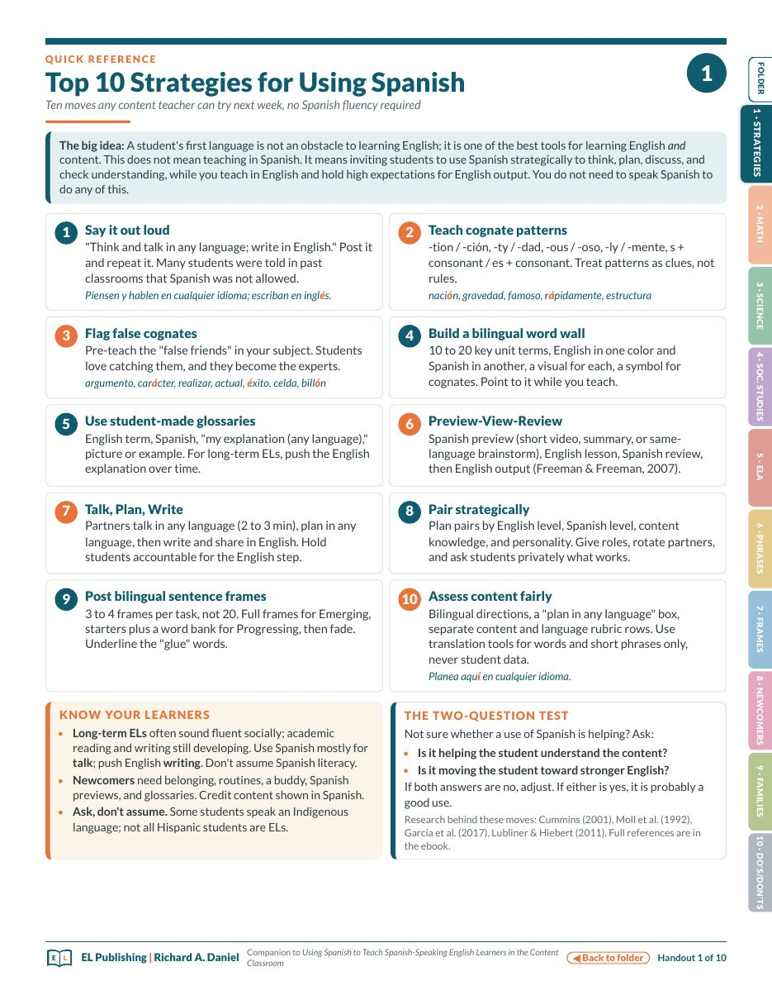
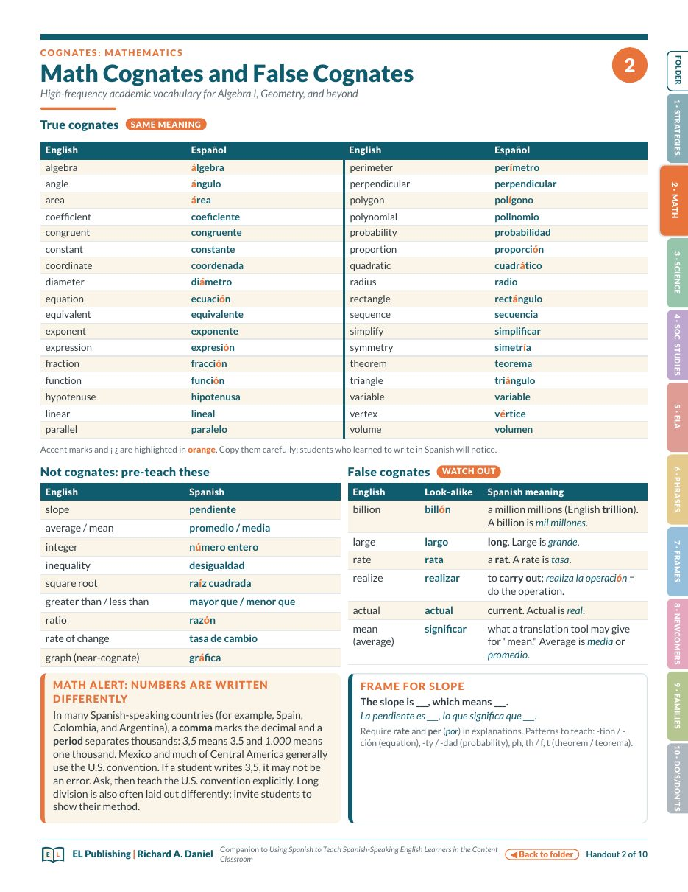
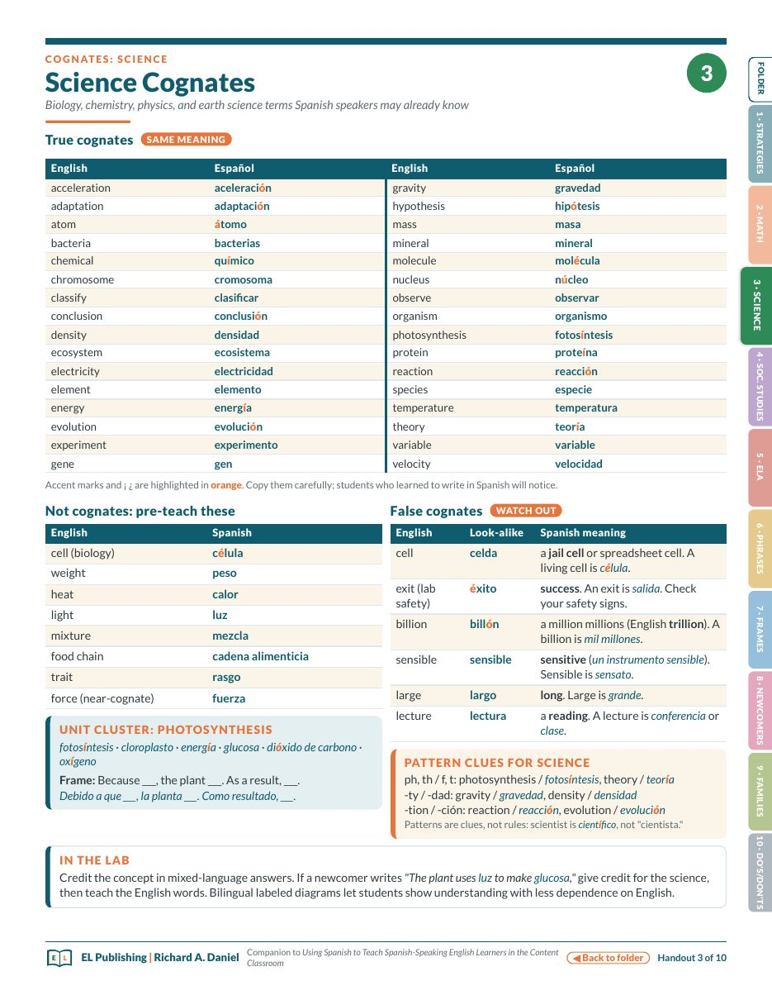
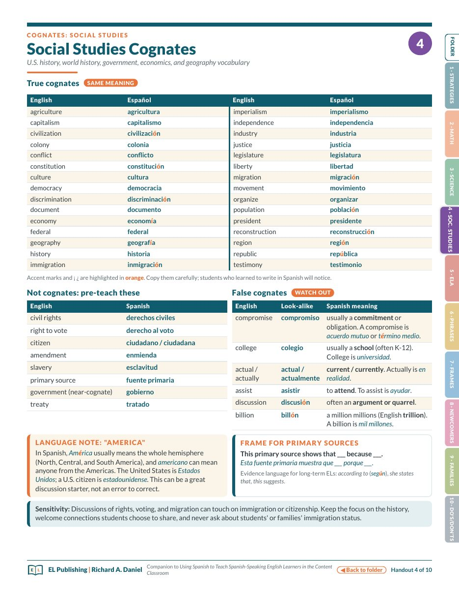
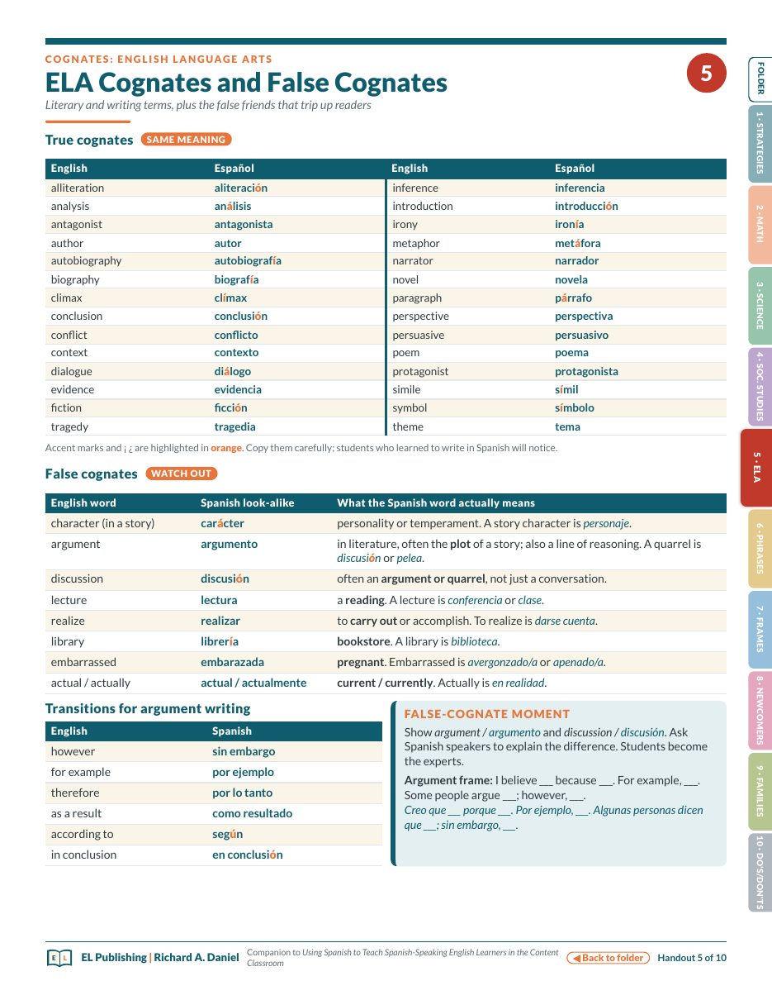
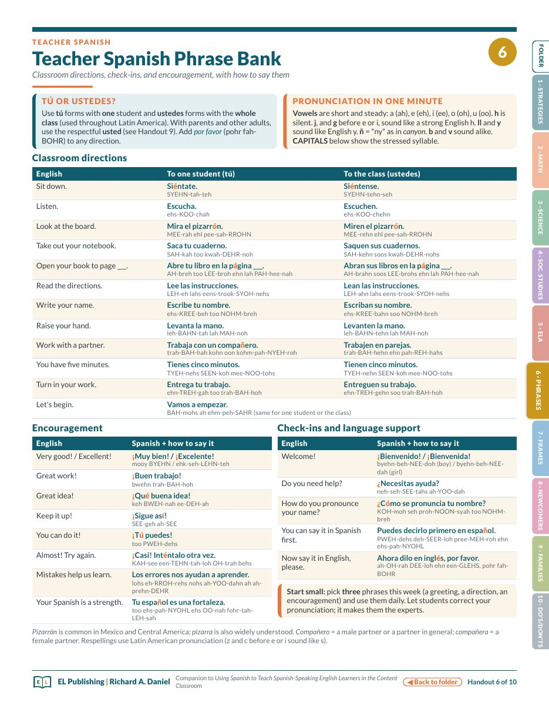
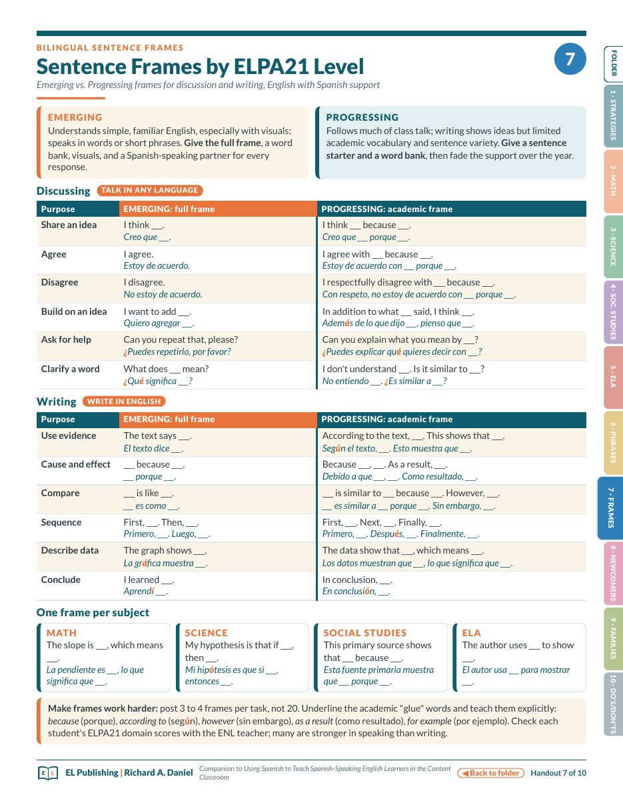
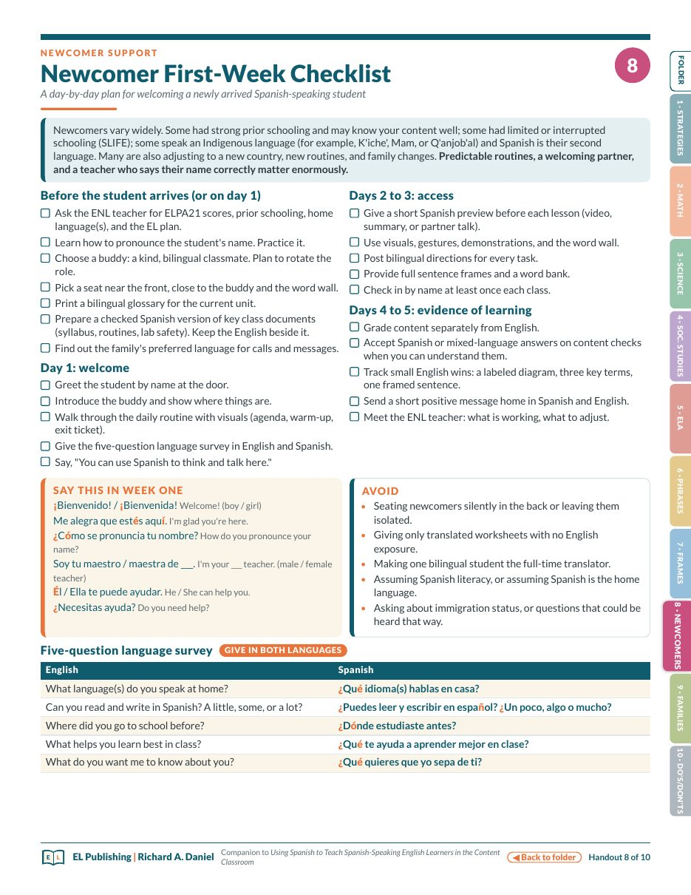
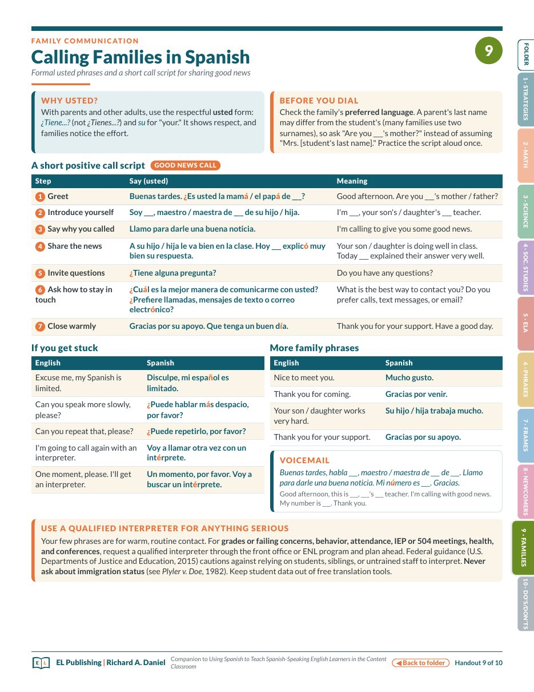
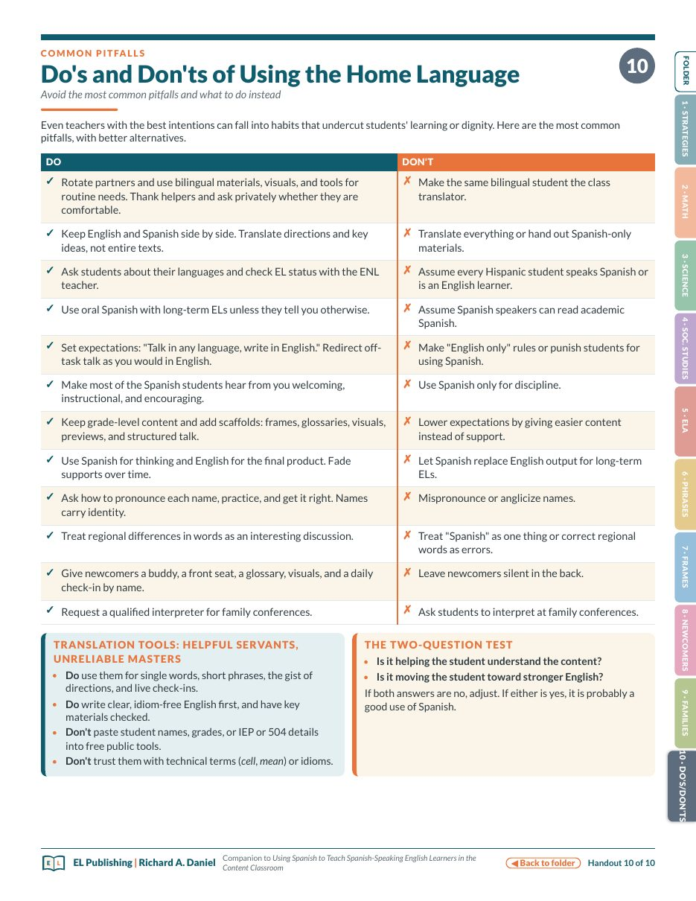

1
Quick reference
Top 10 Strategies for Using SpanishTen moves any content teacher can try next week, with the two-question test for deciding whether a use of Spanish is helping.
EL PUBLISHING · CLASSROOM COMPANION
Ten one-page handouts that go with Using Spanish to Teach Spanish-Speaking English Learners in the Content Classroom. For grades 9–12 math, science, social studies and ELA teachers with Spanish-speaking English learners at the Emerging and Progressing levels, including long-term ELs and newcomers. No Spanish fluency required.

Start here
The 40-page guide makes the case and explains the research. These ten pages are what a teacher actually tapes to the wall, slides into a plan book, or hands to a substitute.
Each handout stands alone on one printed page: a cognate list for your subject, the phrases you will say most, the frames to post for a discussion, the checklist for a student who arrived this morning, the script for a good-news call home. Print the one you need, or download the whole folder — every page has side tabs and a “back to folder” link, so it works on a screen as well as on paper.
Think and talk in any language; write in English. Every handout in the folder is a way to make that sentence true in a content classroom without the teacher translating a word.
The folder
Open any handout at its page in the PDF, or view it as an image. Accent marks are highlighted so they survive copying onto a word wall.
Quick reference
Top 10 Strategies for Using SpanishTen moves any content teacher can try next week, with the two-question test for deciding whether a use of Spanish is helping.

Cognates · Mathematics
Math Cognates and False CognatesThirty-four true cognates for Algebra I and Geometry, nine words to pre-teach, six false friends, and a note on why a student might write 3,5.

Cognates · Science
Science CognatesBiology, chemistry, physics and earth science words students may already know, a photosynthesis unit cluster, and the lab-safety false friend éxito.

Cognates · Social Studies
Social Studies CognatesU.S. and world history, government, economics and geography vocabulary, a frame for primary sources, and the language note on “America.”

Cognates · English Language Arts
ELA Cognates and False CognatesLiterary and writing terms, eight false friends that trip up readers (carácter, argumento, librería), and transitions for argument writing.

Teacher Spanish
Teacher Spanish Phrase BankClassroom directions to one student and to the class, encouragement, check-ins, and a one-minute pronunciation key with the stressed syllable in capitals.

Bilingual sentence frames
Sentence Frames by ELPA21 LevelEmerging full frames beside Progressing academic frames for discussing and writing, English with Spanish support, plus one frame per subject.

Newcomer support
Newcomer First-Week ChecklistA day-by-day plan — before arrival, day one, days two to three, days four to five — with what to say in week one and a five-question language survey.

Family communication
Calling Families in SpanishA seven-step good-news call script in formal usted, what to say if you get stuck, a voicemail, and when to request a qualified interpreter.

Common pitfalls
Do’s and Don’ts of Using the Home LanguageTwelve habits that undercut learning or dignity, each paired with what to do instead, and the rules for translation tools.
Which ones first
Print your cognate list — math, science, social studies or ELA — and the frames. Pre-teach the false friends on Monday; students will catch the next ones themselves.
Start with the first-week checklist, keep the phrase bank on your desk, and make the first call home a good-news call with the script.
Hand out the ten strategies and the do’s and don’ts, ask each teacher to pick two moves for the month, and bring the subject cognate lists to the next meeting.
Not sure whether a use of Spanish is helping? Is it helping the student understand the content? Is it moving the student toward stronger English? If either answer is yes, it is probably a good use.
The guide
The handouts condense the 40-page guide. For the research (Cummins, Moll, García, the cognate studies), the legal floor, how to tell a long-term EL from a newcomer, translation tools used well, fair assessment, and four full lesson snapshots, read the guide itself.
Using Spanish to Teach Spanish-Speaking English Learners in the Content Classroom. The full guide, free.
The folder. All ten handouts in one PDF — print the pages you need, or share the folder with a department.
Spanish phrases reflect widely understood Latin American usage; vocabulary varies by country, so welcome your students’ versions. Free to copy and share for professional learning.